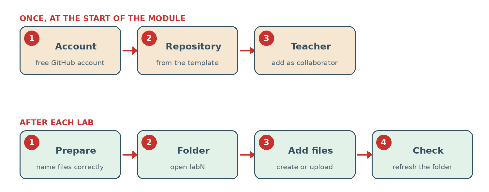

How to Hand In Your Work
You hand in your lab work in one personal GitHub repository for the whole module, with one folder per lab (lab2, lab3, …). Everything happens in your web browser: you do not need to install Git.
Part A is done once, at the start of the module (about 5 minutes). Part B is done after each lab (about 3 minutes).

Part A, step 1: Create a GitHub account
Already have a GitHub account? Go to step 2.
- Go to github.com/signup.
- Enter your email, a password and a username. Choose a username your teacher can recognise, for example
firstname-lastname. - Confirm your email with the code GitHub sends you.
Part A, step 2: Create your repository from the template
- Sign in to GitHub, then open this link.
- Check the top of the form: it shows Repository template: nouhakhyari-sys/jenkins-labs-template. If it does not, refresh the page.
- Owner: your username. Repository name:
jenkins-labs - Description: your full name and group, for example
Ahmed Ben Ali – Master 2. This is how your teacher knows the repository is yours. - Visibility: choose Private, so other students cannot copy your work.
- Do not change the other options. Click Create repository.
After a few seconds you see your repository with a README.md and the folders lab2, lab3 and lab4.
Part A, step 3: Give your teacher access
Your repository is private: your teacher must be added as a collaborator to see it.
- In your repository, click Settings (top menu, gear icon).
- In the left menu, click Collaborators. GitHub may ask for your password or a code.
- Click Add people, type
nouhakhyari-sys, select it, then click Add … to this repository.
The invitation shows as Pending until your teacher accepts it. That is normal.
Part B, step 1: Prepare your files
The last page of each lab lists the files to hand in, with their exact names. For Lab 2:
lab2/Jenkinsfile
lab2/stages.png
lab2/console.pngTake a screenshot:
- Windows: press
Windows + Shift + S, select the area, then open the notification and save the image. - macOS: press
Cmd + Shift + 4and select the area. The image is saved on the desktop. - Linux: press
Print Screenor use the Screenshot app.
Rename each image on your computer before uploading, exactly as asked (for example stages.png, in lowercase). GitHub keeps the name of the file you upload.
Part B, step 2: Open the folder of the lab
Open your repository (https://github.com/your-username/jenkins-labs) and click the folder of the lab, for example lab2. Every file you add now goes into this folder.
Part B, step 3: Add your files
A script (for example the Jenkinsfile):
- Click Add file › Create new file.
- Check the path above the name box: it shows
jenkins-labs / lab2 /. Type the name:Jenkinsfile(capital J, no extension). - Paste your script in the large box. Copy it from the Configure page of your Jenkins job.
- Click Commit changes…, then Commit changes in the window that opens.
Screenshots and other files:
- In the same folder, click Add file › Upload files.
- Drag your images into the page, or click choose your files.
- Wait until each file is listed, then click Commit changes.
Part B, step 4: Check your work
- Click the folder name again (lab2): your files are listed.
- Click each image: it opens and shows what is asked.
- Click the
Jenkinsfile: your full script is there.
Your teacher sees the files and the date you added them. There is nothing else to submit in the LMS.
Fix a mistake
I uploaded a wrong image or a wrong version
Upload the correct file again with exactly the same name, in the same folder. The new version replaces the old one.
I gave a file the wrong name
Click the file, then the pencil icon (Edit). Change the name in the box above the content, then Commit changes. For an image, the simplest is to delete it (… menu › Delete file) and upload it again with the right name.
My file is outside the lab folder
Open the file, click the pencil icon, and type lab2/ at the start of its name: GitHub moves it into the folder. Click Commit changes.
The form did not show "Repository template"
You created an empty repository. Delete it (Settings, bottom of the page, Delete this repository) and do Part A step 2 again with the link, while signed in.
I forgot to write my name in the Description
On the main page of your repository, click the gear icon next to About (right column). Type your full name and group in Description, then click Save changes.
I made my repository Public by mistake
Open Settings, scroll to the bottom (Danger Zone), click Change visibility › Make private and confirm.
I cannot find Settings
You are in the template of your teacher, not in your own repository. Check the address: it must start with github.com/your-username/.